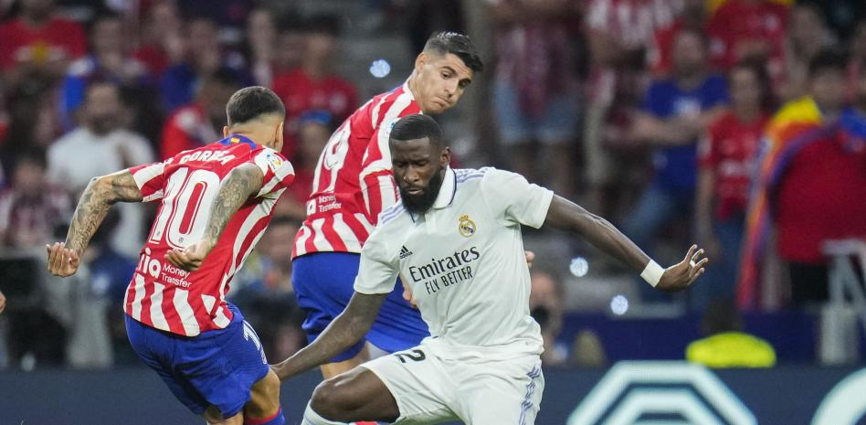
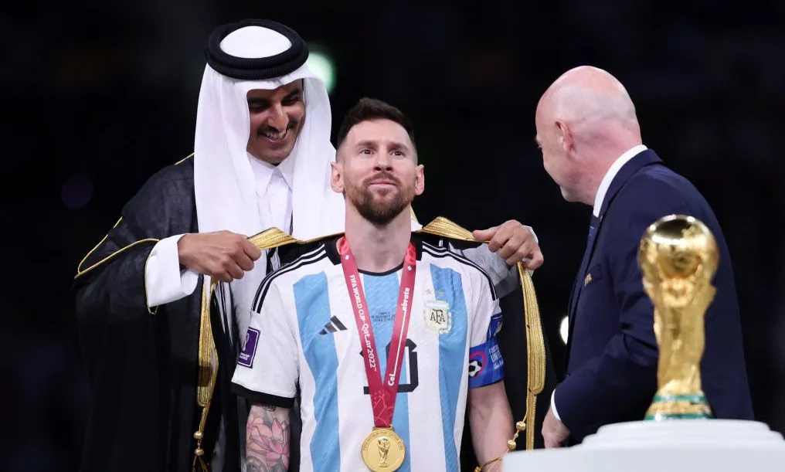
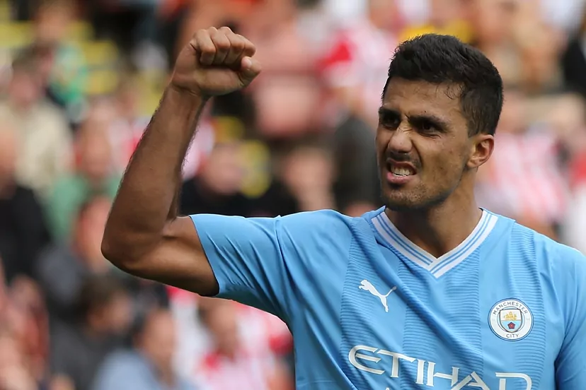

FAL Futbol de primera
Ya se conoce el horario oficial del Atlético-Real Madrid

LaLiga ha hecho oficial este lunes los horarios de los partidos que componen la 6ª jornada de Primera División, que arrancará el viernes 22 de septiembre, a partir de las 21:00 horas, con el duelo entre el Deportivo Alavés y el Athletic Club, y finalizará el domingo 24 de septiembre con el derbi entre Atlético de Madrid y el Real Madrid, a las 21:00 en el Cívitas Metropolitano.
Messi: cambio de vida y la magia futbolística tan viva como siempre

Messi tiene 36 años y, de jugar la Copa Mundial 2026, sería el primer futbolista en jugar un sexto Mundial. "Es difícil que se dé. Faltan las eliminatorias, la Copa América, es ir muy lejos pensar en el Mundial cuando recién terminamos uno", manifestó el crack de Rosario, a poco de consagrarse con la copa que más anhelaba.
En el medio, hubo una conmoción en su vida. Dejó París y se instaló en Miami. Dejó el fútbol europeo, y con él una vida de tensiones que afectaba su cotidianidad.
Rodrigo Hernández, candidato a 'Jugador del Mes' en la Premier

Podría convertirse en el primer español en ganarlo desde De Gea en enero de 2022